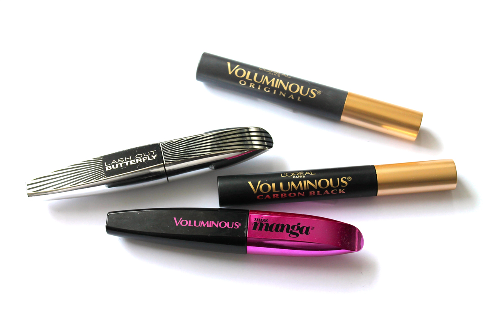
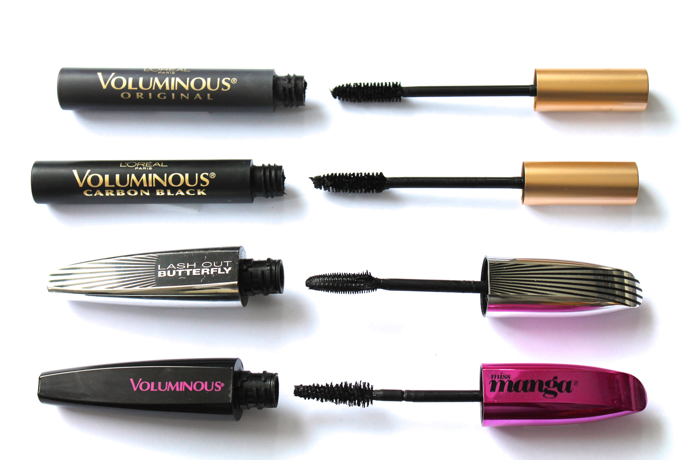

Mascara : efficace et abordable !
  Un bon mascara est un élément de base pour tous les types de maquillage possible et imaginable. Même sans aucun autre produit sur le visage, juste un peu de mascara peut faire toute la différence pour éviter l’allure “j’ai-dormi-deux-heures-cette-nuit”. Mes cils sont assez longs et courbés, alors ce que je cherche dans un mascara, c’est principalement beaucoup de volume.
Après avoir fait une tournée de tous les mascaras que je préfère dans ma collection, une évidence s’impose : ils sont tous de L’Oréal ! J’ai quelques mascaras qu’on peut considérer comme haut de gamme, mais je finis toujours par choisir les plus abordables quand je me maquille, ceux de L’Oréal. Pour moi, ils font exactement ce que je recherche d’un bon mascara, du volume mais sans bavure. À la fin de la journée, mon mascara est bien resté sur mes cils et ne s’est pas retrouvé partout sur mes joues, un plus !
La série Voluminous fait exactement ce qu’elle prétend, soit donner beaucoup de volume. La version Carbon Black peut donner une allure plus lourde aux cils car il y a beaucoup de produit sur la brosse, mais ça donne un côté “grunge” que j’aime parfois. Miss Manga et Lash Out Butterfly donnent aussi beaucoup de volume et leur brosse permet de vraiment bien atteindre les cils plus à l’extérieur.
Je trouve difficile d’essayer d’autre marque parce que je suis satisfaite avec L’Oréal, avez-vous un mascara incontournable à me proposer?